ENGL 1301Davis Writing StudioOption A
Round dragon (brighter)
Current hub mark, cream stroke so it reads on charcoal.
Same charcoal circle as the course pages. Pick the one you want in the top bar (or keep the course number).

ENGL 1301Davis Writing StudioOption A
Round dragon (brighter)
Current hub mark, cream stroke so it reads on charcoal.
Option B
Coil
Coiled body with a clear eye — a bit more emblem-like.
Option C
Wing
Broader wing silhouette inside the circle.
Option D
Flight line
Open line drawing of a dragon in flight — lighter, more calligraphic.

ENGL 1301Davis Writing StudioOption E
Letter D
Simple D monogram with a small wing flick.
Option F
Course number
Back to the plain “1301” circle (no dragon in the mark).